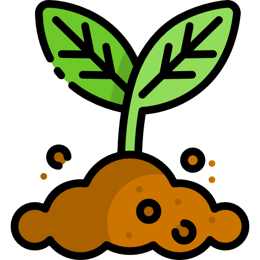

Seja bem-vindo ao Viva Verde
A Vida Verde é um e-commerce de sementes que une cultivo e solidariedade.
Vendemos sementes de alimentos que você pode plantar em casa ou na sua horta.
Mas o nosso propósito vai além da venda: 10% de cada compra é destinada à nossa mini horta solidária, em São Paulo.
Nessa horta, cultivamos alimentos que são doados para feirantes cadastrados no nosso programa, ajudando quem precisa sem exigir investimento inicial.
Duas vezes por ano, também realizamos feiras solidárias (na Páscoa e no Natal), onde alimentos são vendidos a preços simbólicos.
O valor arrecadado é usado para manter a horta e fortalecer nosso e-commerce.
Com a Vida Verde, você cultiva alimentos e ajuda a transformar vidas.
Confira nossos produtos
Sementes de verduras
Sementes de legumes
Sementes de frutas
Terras